Debitare, îndepărtarea mantalei, dezizolare, sertizarea tuburilor terminale și a papucilor, conectare. Terminologia germană este dată în paranteză, pentru cataloagele și materialele producătorilor germani (Knipex, Weidmüller, Wago, Klauke, Jokari, Wiha) folosite pe șantierele din Germania.
La sfârșitul lecției, cursantul trebuie să poată:
Regula de bază: toate operațiile de prelucrare se fac pe cabluri scoase de sub tensiune. Înainte de a atinge un conductor se aplică cele 5 reguli (die 5 Sicherheitsregeln): 1 separare; 2 asigurare împotriva reanclanșării; 3 verificarea lipsei tensiunii; 4 legare la pământ și în scurtcircuit; 5 îngrădirea părților vecine rămase sub tensiune. Sculele izolate VDE (cap. 12) sunt o protecție suplimentară, nu un motiv de a lucra sub tensiune.
Indiferent de cablu, un capăt de cablu trece prin aceleași operații, în aceeași ordine. Fiecare operație are sculele ei; folosirea unei scule „din altă căsuță” (de exemplu cuțitul la dezizolare) este sursa celor mai multe defecte.
Scula se alege după materialul și construcția conductorului, nu după ce avem la îndemână. SR EN 60228 (IEC 60228) împarte conductoarele de cupru în clase:
| Clasa | Construcție | Exemple (Europa, 230/400 V, 50 Hz) | Ce cere la prelucrare |
|---|---|---|---|
| 1 | masiv (eindrähtig, „U”) | H07V-U, NYM-J 3×1,5 … 5×10, NYY până la 16 mm² | dezizolare curată, fără crestarea firului; fără tub terminal |
| 2 | multifilar rigid (mehrdrähtig, „R”) | NYY-J 4×25 … 240, NAYY (aluminiu) | papuc tubular sertizat hexagonal sau clemă cu șurub V; nu se sertizează tub terminal |
| 5 | flexibil, fire fine (feindrähtig, „K”/„F”) | H07V-K (în tablouri), H05VV-F, H07RN-F (cordoane, motoare) | obligatoriu tub terminal sau papuc în cleme cu șurub; clemă cu arc Push-in numai dacă producătorul o admite |
| 6 | extraflexibil, fire foarte fine (feinstdrähtig, „H”) | cabluri de sudură, cabluri de baterie, robotică | tub terminal sau papuc special (secțiune mai mare a tubului) |
Literele din denumire spun ce clasă avem: H07V-U = masiv, H07V-R = multifilar rigid, H07V-K = flexibil. La cablurile NYM/NYY, clasa se schimbă la 16 mm²: sub această secțiune conductorul este masiv (clasa 1), de la 16 mm² în sus este multifilar (clasa 2).
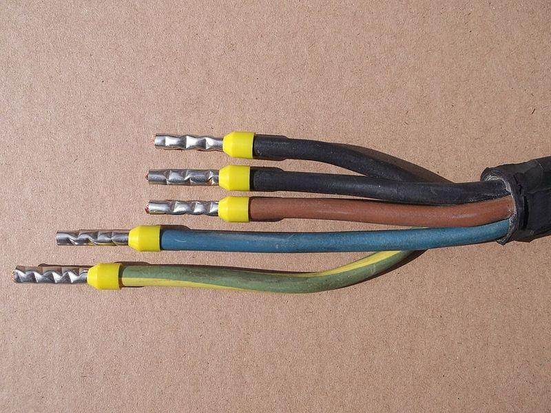
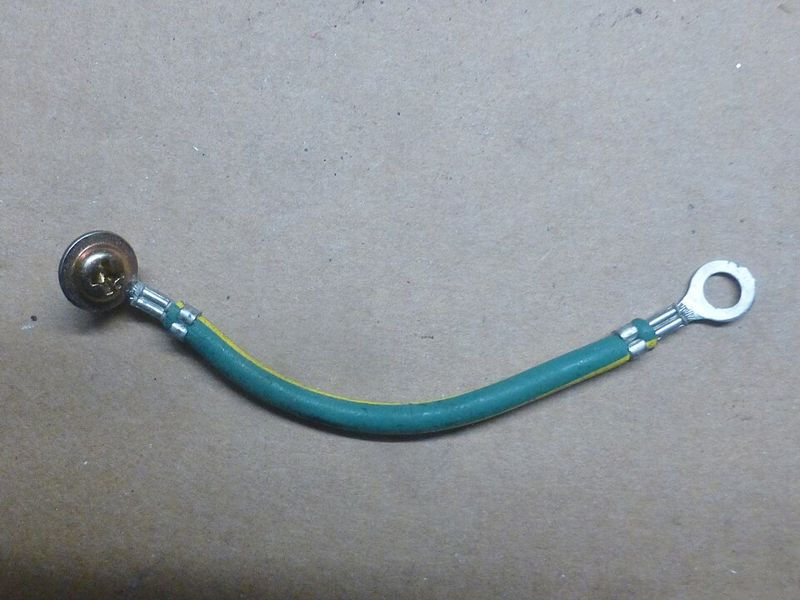
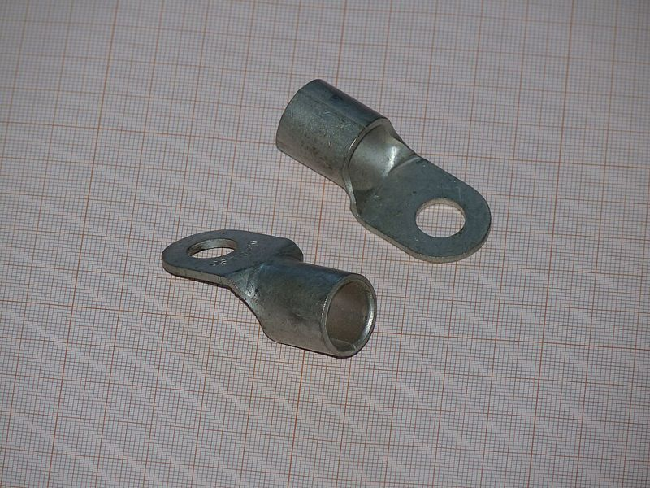
Multe scule se aleg după secțiunea conductorului (mm²), altele (dezizolatoarele de manta) după diametrul exterior al cablului (mm). Pentru estimări rapide:
| Secțiune mm² | Ø conductor masiv mm | Ø aprox. conductor flexibil cl. 5 mm | Ø exterior cablu tipic |
|---|---|---|---|
| 1,5 | 1,38 | 1,7 | NYM-J 3×1,5: ≈ 9 mm; H05VV-F 3G1,5: ≈ 8 mm |
| 2,5 | 1,78 | 2,2 | NYM-J 5×2,5: ≈ 12 mm; H07RN-F 5G2,5: ≈ 14 mm |
| 4 | 2,26 | 2,8 | NYM-J 5×4: ≈ 14 mm |
| 6 | 2,76 | 3,4 | NYM-J 5×6: ≈ 16 mm |
| 10 | 3,57 | 4,5 | NYY-J 5×10: ≈ 19 mm |
| 16 | 4,5 (multifilar ≈ 5,2) | 5,6 | NYY-J 5×16: ≈ 22 mm |
| 25 | — (multifilar ≈ 6,5) | 7,0 | NYY-J 4×25: ≈ 23 mm |
Diametrul conductorului masiv: d = √(4·S/π). Exemplu: S = 2,5 mm² → d = √(3,18) = 1,78 mm. Diametrele exterioare ale cablurilor sunt orientative; se citesc din fișa tehnică a producătorului (Prysmian, Nexans, Lapp).
Debitarea trebuie să lase o secțiune netedă și rotundă. Un capăt turtit sau cu bavuri nu mai intră în dezizolatorul de manta, în tubul terminal sau în papuc. De aceea, dincolo de câțiva mm², se trece de la cleștele tăietor la foarfeca de cablu, care taie prin forfecare fără să strivească.
| Scula | Denumire germană | Domeniu tipic | Observații |
|---|---|---|---|
| Clește tăietor lateral (clește de tăiat diagonal) | Seitenschneider | conductoare până la ≈ 4 mm² Cu (Ø 2–4 mm sârmă moale) | tăiere prin pană (strivire), nu prin forfecare; capătul rămâne ușor turtit; nu se folosește la cabluri groase sau oțel dur |
| Clește tăietor lateral cu pârghie | Kraft-Seitenschneider | sârmă până la Ø 4,5 mm (dur 3 mm) | pentru sârmă de oțel, cuie, șuruburi; nu pentru capete care se sertizează |
| Foarfecă de cablu | Kabelschere | Cu/Al până la ≈ Ø 15–20 mm, 50 mm² (5×2,5 la 200 mm) | tăiere prin forfecare, capăt rotund; nu pentru cablu armat (SWA) sau oțel |
| Foarfecă de cablu cu clichet | Ratschen-Kabelschneider | Ø 32–52 mm, până la 240–400 mm² Cu/Al | clichetul înmulțește forța; se lucrează cu ambele mâini; nu pentru oțel |
| Foarfecă hidraulică / cu acumulator | Hydraulischer Kabelschneider, Akku-Kabelschneider | Ø 50–120 mm, cabluri armate | pe șantier, la cabluri de medie tensiune și cabluri armate cu bandă de oțel |
| Clește combinat (universal) | Kombizange | apucare, îndoire, tăiere mică | tăietorul lateral al combinatului este de rezervă; nu se folosește la dezizolare |
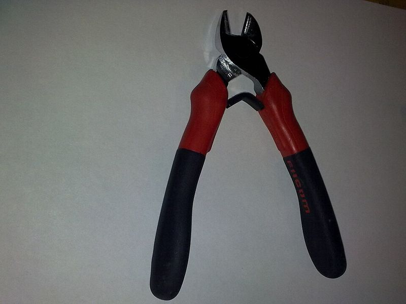
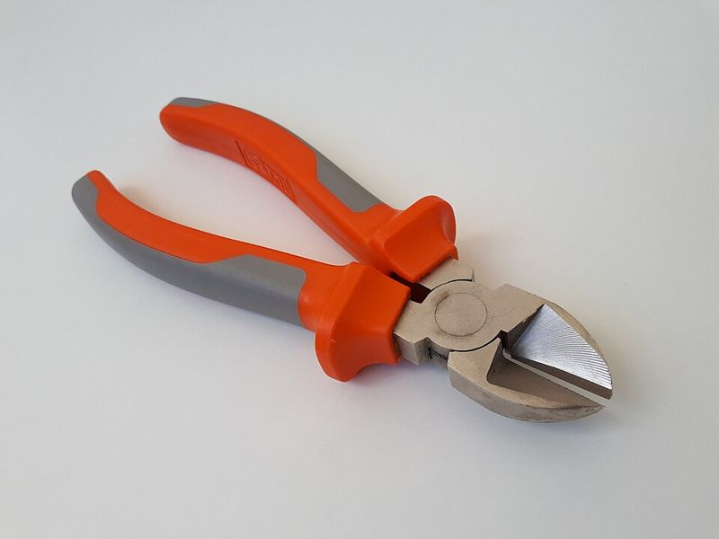
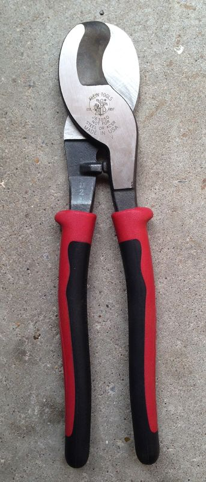
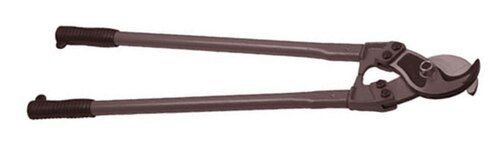
Nu tăiați cu foarfeca de cablu: cabluri armate cu bandă/sârmă de oțel, cabluri de tracțiune din oțel, șuruburi. Tăișul se ciobește și scula devine bună de aruncat. Pentru acestea există foarfeca de armătură și cleștele pentru cablu de oțel (Drahtseilschere).
Îndepărtarea mantalei (Abmanteln) înseamnă înlăturarea mantalei exterioare a unui cablu cu mai multe conductoare (NYM, NYY, H05VV-F, cablu de date), fără să atingem izolația conductoarelor din interior. Este operația la care se fac cele mai multe greșeli cu cuțitul: o zgârietură pe izolația unui conductor din interior nu se vede după montaj, dar poate da scurtcircuit sau punere la masă după ani.
| Scula | Denumire germană | Domeniu | Cum lucrează |
|---|---|---|---|
| Cuțit de cablu cu lamă cârlig | Kabelmesser (Hakenklinge) | orice diametru | tăietură longitudinală și circulară; cere experiență; tăierea se face de la corp în afară, niciodată spre mână |
| Cuțit de cu mantaua îndepărtată cu adâncime reglabilă | Abmantelungsmesser mit einstellbarer Klinge | Ø 8–28 mm | lama iese numai cât grosimea mantalei (0,5–5 mm); nu poate atinge conductoarele dacă adâncimea e reglată corect |
| Dezizolator de manta rotativ, pentru cablu rotund | Rundkabel-Abmantler (Jokari Secura, Knipex 16 20) | Ø 8–13 mm, 4–28 mm | se strânge pe cablu, se rotește 2–3 ture (tăietură circulară), apoi se trage (tăietură longitudinală); adâncimea se autoreglează |
| Dezizolator de manta universal | Universal-Abmantelungswerkzeug (Knipex ErgoStrip, Wago) | cablu rotund 8–13 mm, plat, coaxial, date | mai multe lăcașuri: circular, longitudinal, plus găuri de dezizolare 0,2–4 mm² |
| Dezizolator de manta pentru doze | Innendosen-Entmantler / Dosenabmantler | NYM în doză | lamă scurtă pentru cablu deja tras în doză, unde nu e loc pentru cuțit |
| Clește de instalații (multifuncțional) | Elektro-Installationszange, TriCut | NYM 3×1,5 … 5×2,5 | îndepărtarea mantalei, dezizolare 0,75–2,5 mm², tăiere și sertizare tub 0,5–2,5 mm² într-o singură sculă |
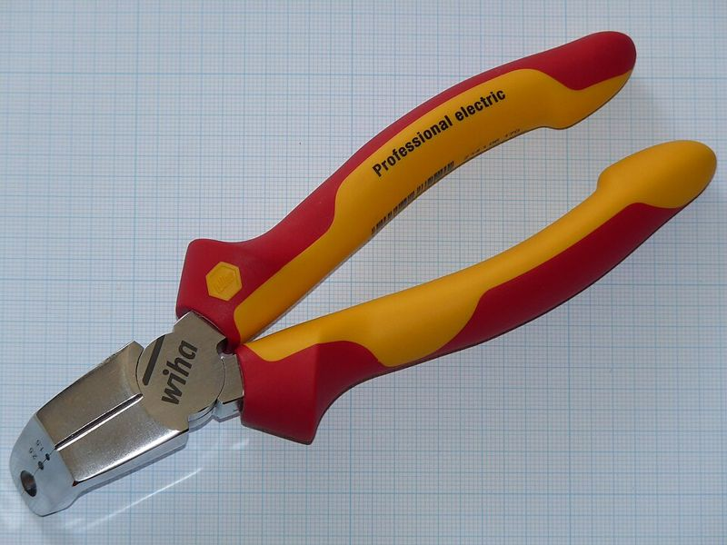
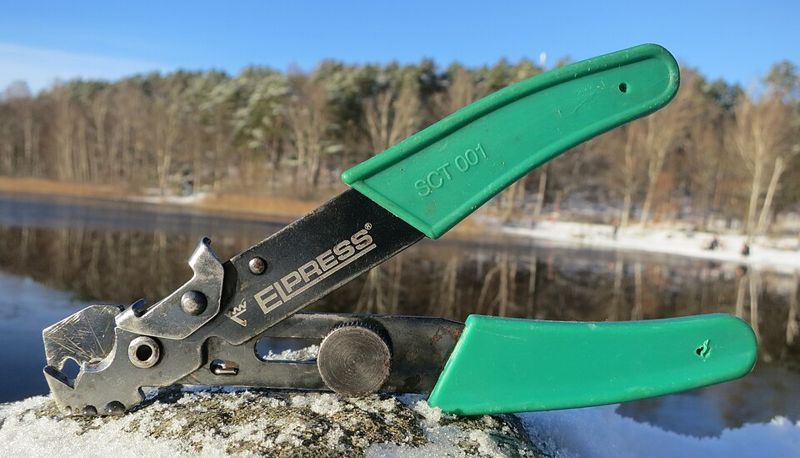
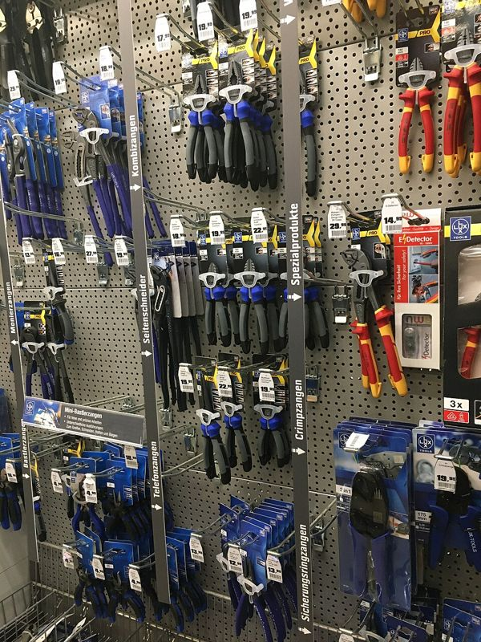
Dezizolarea (Abisolieren) înlătură izolația unui singur conductor pe lungimea cerută de clemă sau de tubul terminal. Cerințele: lungime exactă, nicio crestare a firului masiv, niciun fir tăiat din conductorul flexibil. Un conductor de 1,5 mm² clasa 5 are 30 de fire de 0,25 mm; dacă cleștele taie 5 dintre ele, secțiunea a scăzut cu 17 % și capătul se va încălzi.
| Scula | Denumire germană | Domeniu | Avantaje / limite |
|---|---|---|---|
| Clește dezizolator cu găuri calibrate | Abisolierzange mit Abisolierlöchern | 0,5–6 mm² (găuri marcate) | ieftin, robust; trebuie ales lăcașul corect; unele au șurub de reglaj al deschiderii (Einstellschraube) |
| Clește dezizolator automat (autoreglabil) | Automatische Abisolierzange, Selbsteinstellende Abisolierzange (Knipex PreciStrip16, Weidmüller Stripax, Wago Quickstrip) | 0,08–16 mm² (PreciStrip16), 0,03–16 mm² (Quickstrip Vario) | cuțitele se închid automat la grosimea izolației; opritor de lungime reglabil (5–20 mm); ideal la cablarea tablourilor cu sute de capete |
| Clește dezizolator „pistol” | Abisolierzange in Pistolenform | 0,2–6 mm² | prinde și trage izolația într-o singură strângere; lucru rapid într-o mână |
| Cuțit de dezizolat cu lamă rotativă (pentru secțiuni mari) | Abisolierwerkzeug für große Querschnitte | 16–240 mm², Ø 4–28 mm | se rotește pe conductor, taie circular și longitudinal izolația groasă a conductoarelor NYY, H07V-K 35–95 mm² |
| Mașină de dezizolat | Abisoliermaschine (Schleuniger, Komax) | 0,05–16 mm²; mii de capete/oră | în producția de tablouri și cablaje; lungime programată, repetabilitate perfectă |
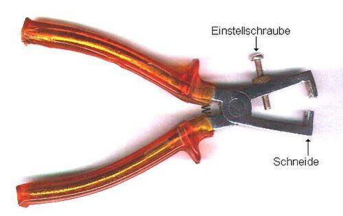
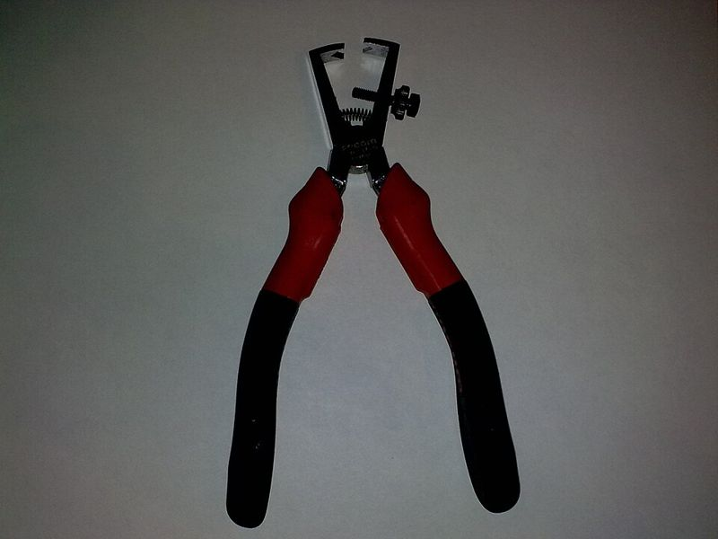
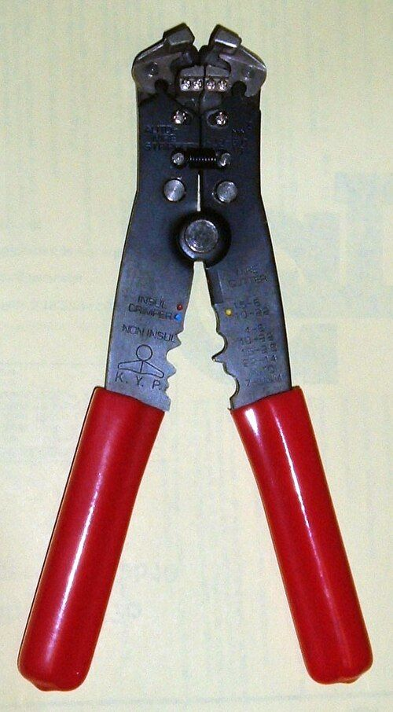
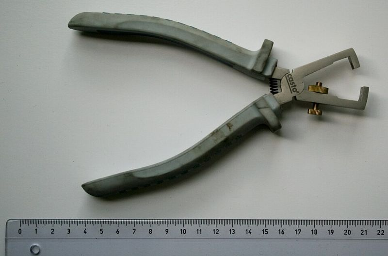
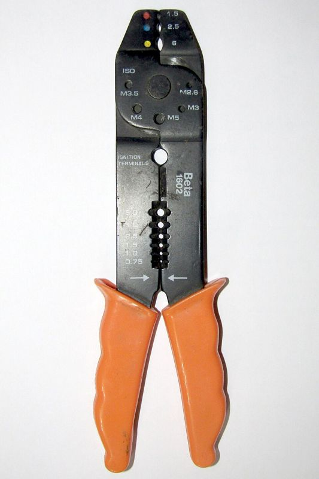
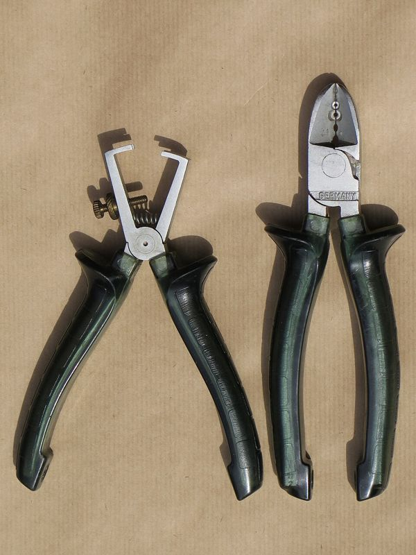
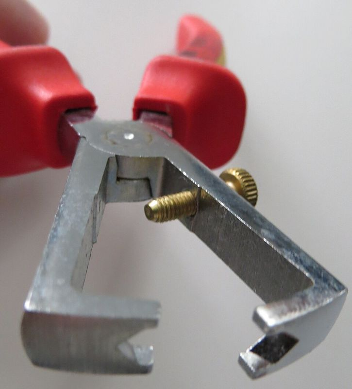
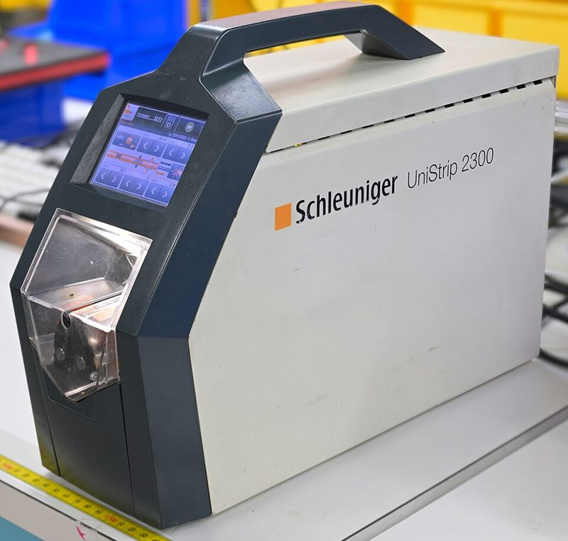
Lungimea nu se „ghicește”: fiecare clemă și fiecare tub terminal au o lungime prescrisă, de obicei ștanțată pe clemă (de exemplu „11 mm” pe cleme Wago 221) sau dată în catalog.
| Unde se conectează | Lungime dezizolare | Observație |
|---|---|---|
| Tub terminal 0,5–2,5 mm² (lungime metalică 8 mm) | 8–9 mm | tuburi de 6 mm pentru cleme mici, de 10–12 mm pentru cleme adânci |
| Tub terminal 4–6 mm² (10–12 mm) | 10–12 mm | după lungimea tubului ales |
| Tub terminal 10–16 mm² (12 mm) | 12–13 mm | tuburi lungi 18 mm pentru borne de întreruptoare |
| Clemă cu arc Wago 221 / 2273 | 11 mm | ștanțat pe clemă; masiv sau flexibil direct (221), numai masiv la 2273 |
| Clemă șir cu arc Phoenix PT 2,5 / Weidmüller A2C | 10 mm | tub terminal admis, nu obligatoriu (verificați fișa tehnică) |
| Clemă cu șurub 2,5 mm² (întreruptor automat, priză) | 8–12 mm | după adâncimea bornei; cuprul să nu iasă din bornă |
| Papuc tubular 70 mm² | ≈ 30 mm | = lungimea manșonului papucului + 1–2 mm |
Tubul terminal (Aderendhülse) este un tub subțire de cupru cositorit, sertizat pe capătul unui conductor flexibil (clasa 5 sau 6), cu sau fără guler de plastic. Rolul lui: ține firele împreună, împiedică firele răzlețe (care pot atinge borna vecină) și dă un capăt care rezistă la strângerea șurubului fără să se rupă firele. Fără tub, un conductor flexibil nu se introduce în clemă cu șurub (regulă din DIN VDE 0100-520 și din instrucțiunile tuturor producătorilor de aparate).
| Tip | Denumire germană | Normă | Când se folosește |
|---|---|---|---|
| Tub neizolat | Aderendhülse unisoliert | DIN 46228-1 | când nu e loc pentru guler (cleme înguste), în aparate; nu marchează culoarea secțiunii |
| Tub izolat (cu guler de plastic) | Aderendhülse isoliert / mit Kunststoffkragen | DIN 46228-4 | uzual în tablouri; gulerul ghidează firele la introducere și protejează izolația; culoarea gulerului = secțiunea |
| Tub dublu (pentru două conductoare) | Zwillings-Aderendhülse, Twin | — | două conductoare de aceeași secțiune în aceeași bornă (punte între cleme) |
| Tub lung 12, 18 mm | lange Ausführung | — | borne adânci: contactoare, întreruptoare automate cu bornă în cutie |
Atenție: există și un cod francez (diferit) și coduri proprii ale unor producători. Pe ambalaj scrie „DIN” sau „FR”. În Germania și în cataloagele Weidmüller, Phoenix Contact, Klauke, Knipex se folosește codul DIN de mai jos.
| mm² | Culoare guler | Lungime uzuală tub (mm) | mm² | Culoare guler | Lungime uzuală tub (mm) |
|---|---|---|---|---|---|
| 0,14 | gri | 6 | 6 | galben | 12 |
| 0,25 | galben | 6–8 | 10 | roșu | 12 |
| 0,34 | turcoaz | 6–8 | 16 | albastru | 12 |
| 0,5 | alb | 8 | 25 | galben | 16 |
| 0,75 | gri | 8 | 35 | roșu | 16 |
| 1,0 | roșu | 8 | 50 | albastru | 20 |
| 1,5 | negru | 8 | 70 | galben | 20 |
| 2,5 | albastru | 8 | 95 | roșu | 25 |
| 4 | gri | 10 | 120 | albastru | 27 |
Regulă de reținut: de la 6 mm² în sus, culorile se repetă din trei în trei: galben – roșu – albastru (6 galben, 10 roșu, 16 albastru, 25 galben, 35 roșu, 50 albastru …). Sub 6 mm² trebuie învățate: 0,5 alb, 0,75 gri, 1 roșu, 1,5 negru, 2,5 albastru, 4 gri.
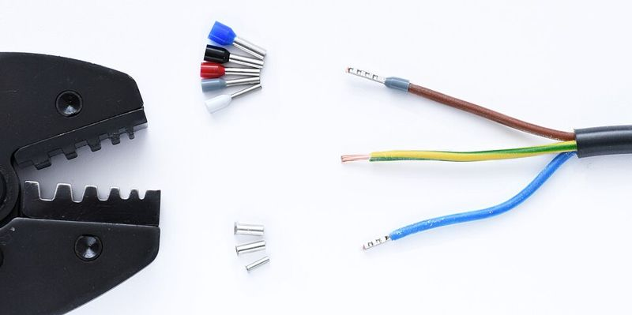
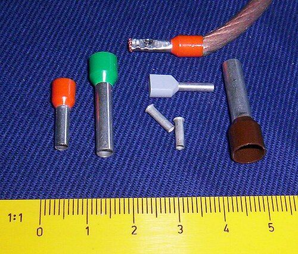
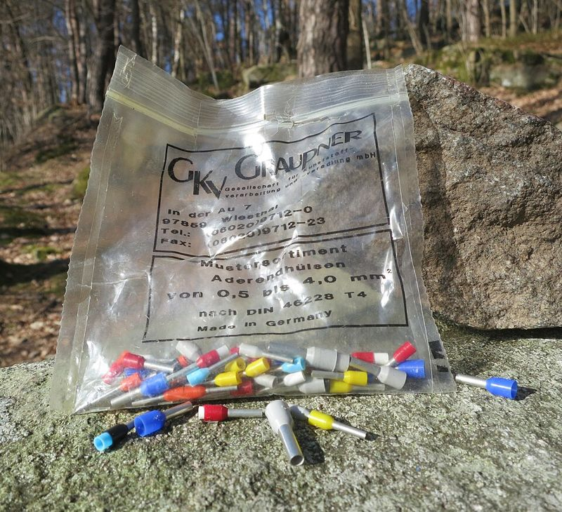
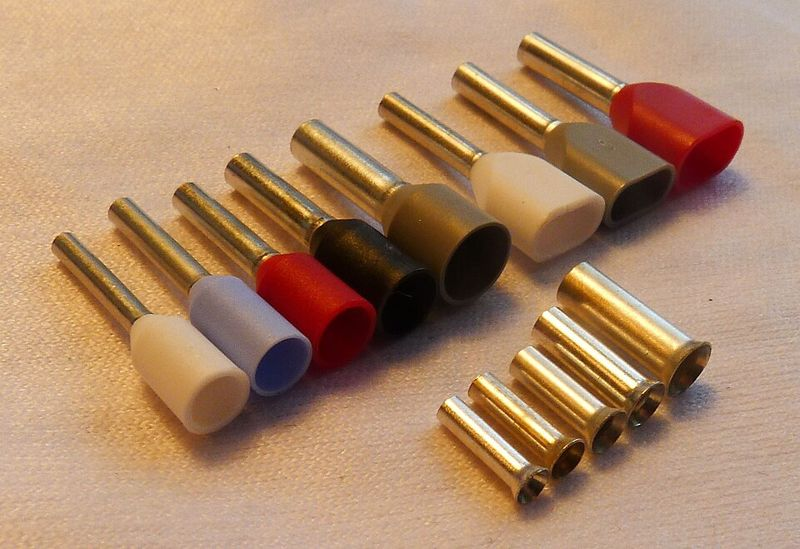
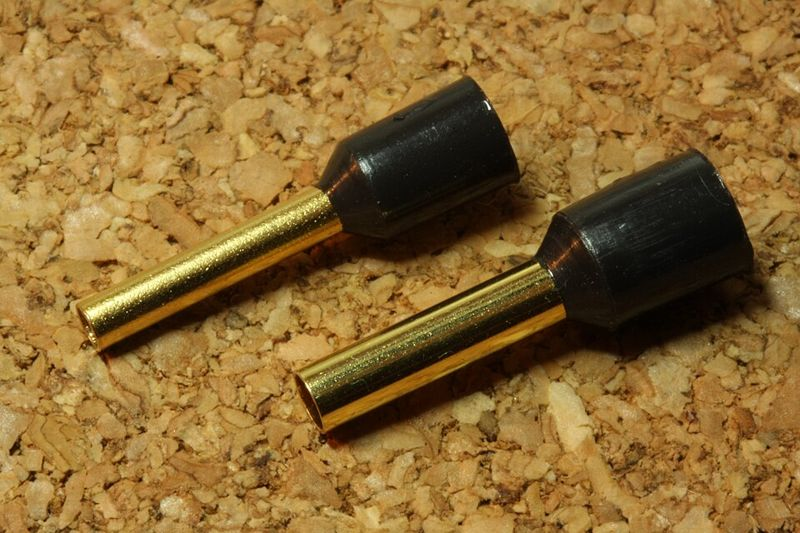
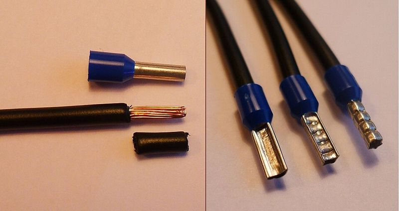
Sertizarea (Crimpen, Verpressen) este o îmbinare nedemontabilă, prin deformare plastică: tubul și firele sunt presate până devin un singur corp, fără goluri. Calitatea depinde de trei lucruri: tubul potrivit secțiunii, cleștele potrivit tubului și presarea completă (cleștii buni au clichet: nu se deschid până nu s-a atins forța de presare).
| Clește | Denumire germană | Domeniu | Observații |
|---|---|---|---|
| Clește simplu pentru tuburi (profil trapezoidal), fără clichet | Aderendhülsenzange | 0,25–2,5 sau 0,5–6 mm² | ieftin, în fiecare trusă; forța depinde de mână, nu garantează presarea completă |
| Clește autoreglabil cu clichet, introducere frontală | selbsteinstellende Crimpzange mit Fronteinführung (Knipex 97 53 04, Weidmüller PZ 6 Roto) | 0,08–10 (16) mm² | cel mai folosit în tablouri; profil pătrat sau hexagonal; presează pe toată lungimea tubului |
| Clește cu capete rotative (360°) | Crimpzange mit drehbarem Crimpkopf (Knipex Twistor16) | 0,14–16 mm² | capul se rotește: sertizare în poziții incomode, în tablou montat |
| Clește cu matrițe pentru tuburi mari | Presszange für große Aderendhülsen (Klauke K 30, Knipex 97 72 180) | 10–150 mm² | presare cu amprente (WM); pentru capete de motoare mari, invertoare, baterii |
| Clește cu benzi de tuburi (alimentare automată) | Crimpzange mit Magazin / Bandaderendhülsen | 0,5–2,5 mm² | tuburile vin pe bandă; un ciclu = un capăt sertizat; productivitate mare |
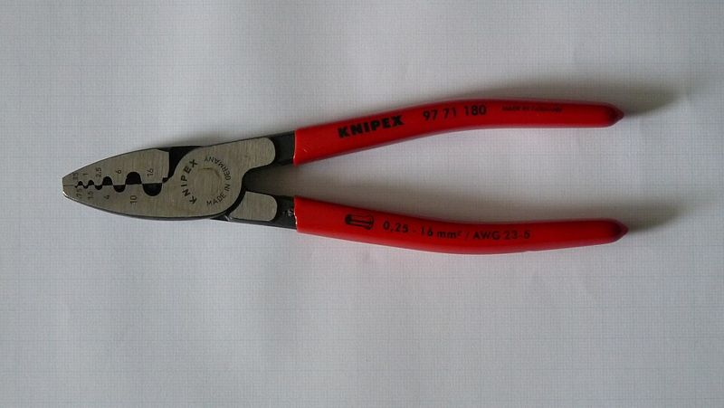
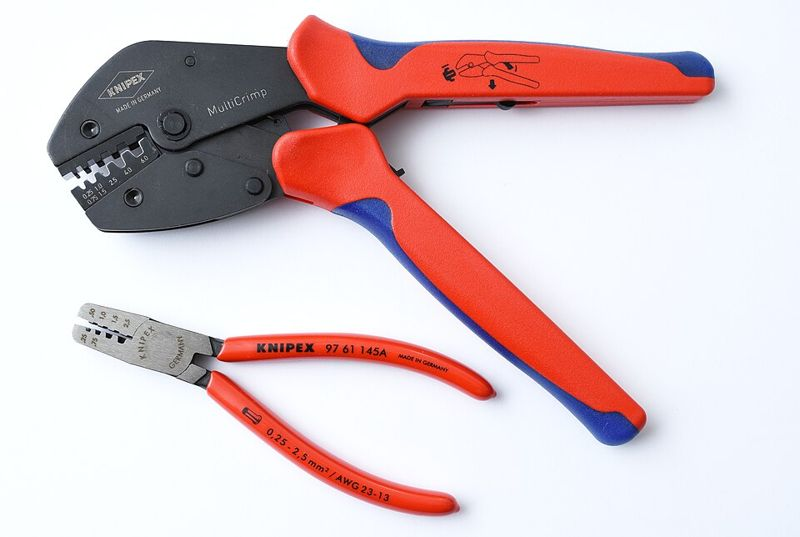
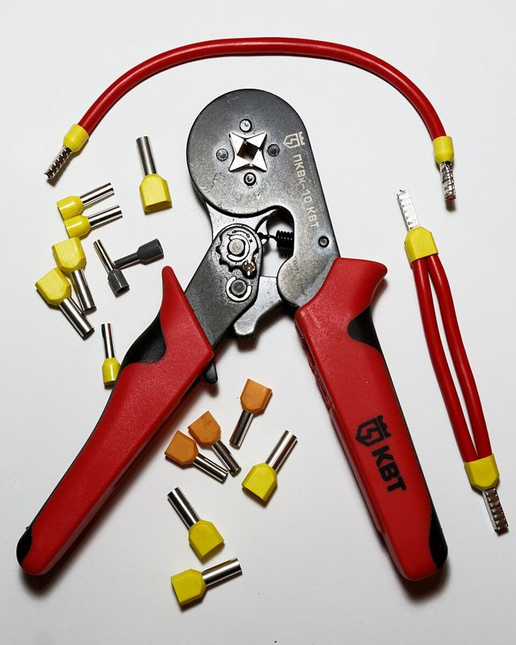
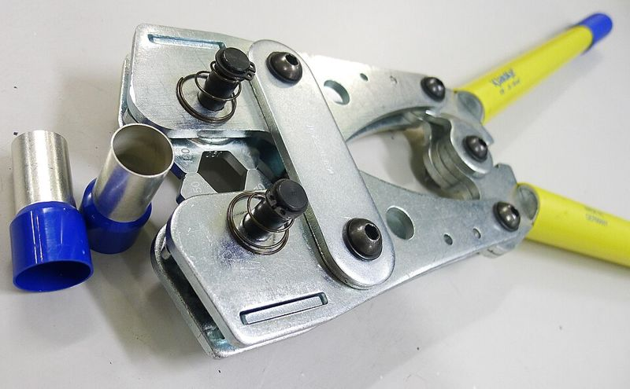
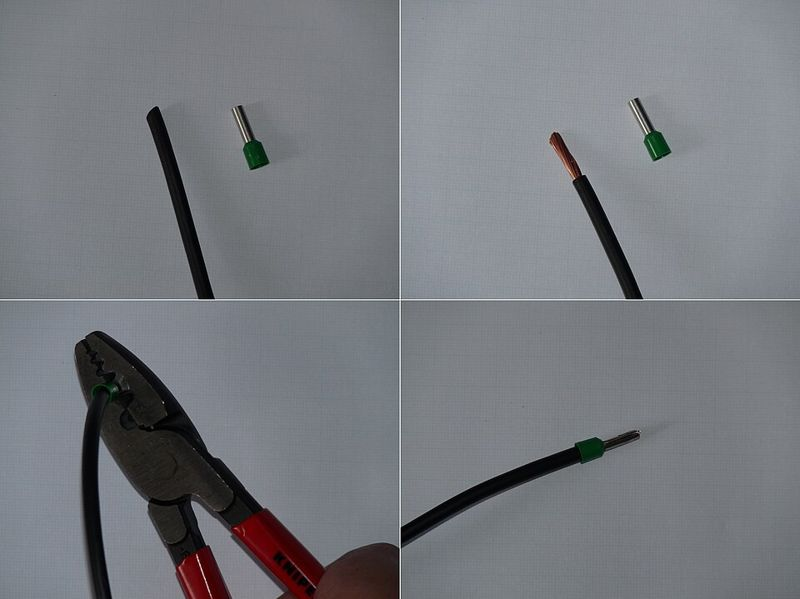
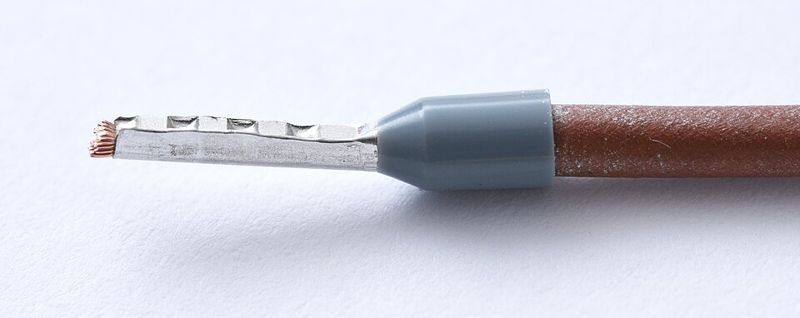
Papucul de cablu (Kabelschuh) transformă capătul conductorului într-o piesă cu ochi, furcă sau lamelă, pentru borne cu șurub sau fișe plate. Pentru fiecare tip există un clește sau o matriță anume; sertizarea unui papuc cu un clește nepotrivit (sau cu cleștele combinat) dă cele mai periculoase defecte: contact aparent bun la montaj, care se încălzește în funcționare.
| Tip | Denumire germană | Secțiuni uzuale | Scula |
|---|---|---|---|
| Papuc inelar izolat (cod culoare: roșu 0,5–1,5, albastru 1,5–2,5, galben 4–6 mm²) | Ringkabelschuh isoliert | 0,5–6 mm² | clește pentru conectori izolați, cu trei lăcașuri roșu/albastru/galben; cel bun are clichet |
| Papuc inelar / furcă neizolat (sertizabil) | Quetschkabelschuh, Gabelkabelschuh | 0,5–10 mm² | clește cu profil B (Kerbpressung), care îndoaie aripile manșonului peste fire |
| Papuc tubular de cupru (DIN 46235) și papuc standard | Rohrkabelschuh, Presskabelschuh | 6–400 mm² | sertizare hexagonală (DIN 48083) cu clește cu matrițe, presă hidraulică manuală sau cu acumulator; matrița este marcată cu codul secțiunii (ex. „6” pentru 6 mm², „22” pentru 70 mm² la Klauke) și lasă amprenta codului pe papuc |
| Papuc pentru aluminiu / Al–Cu | Al-Presskabelschuh, Al/Cu-Presskabelschuh | 16–300 mm² | numai papuci umpluți cu pastă de contact, sertizare hexagonală; conductorul de Al se periază înainte |
| Fișă plată / conector plat 6,3 mm | Flachsteckhülse, Flachstecker | 0,5–2,5 mm² | clește pentru conectori plați (profil B dublu: fire + izolație) |
| Mufă de îmbinare cap la cap | Stoßverbinder | 0,5–16 mm²; 16–240 mm² (tubulară) | ca la papucii de aceeași secțiune; se acoperă cu tub termocontractibil |
| Conector cu amprente (contacte de pini) | Vierdorn-Crimpzange, Indent-Crimp | 0,08–6 mm² (AWG 28–10) | contacte rotunde din conectori industriali (Harting, Phoenix); 4 sau 8 amprente; cu reglaj de poziție |
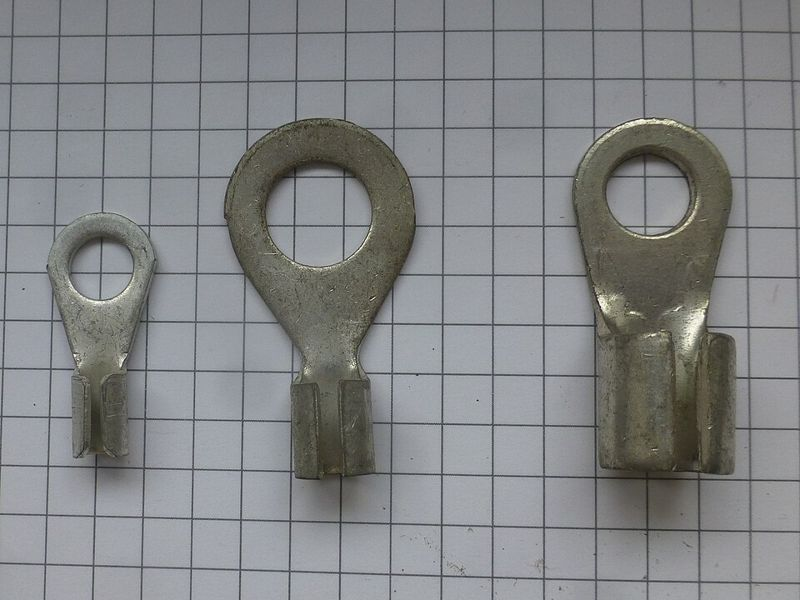
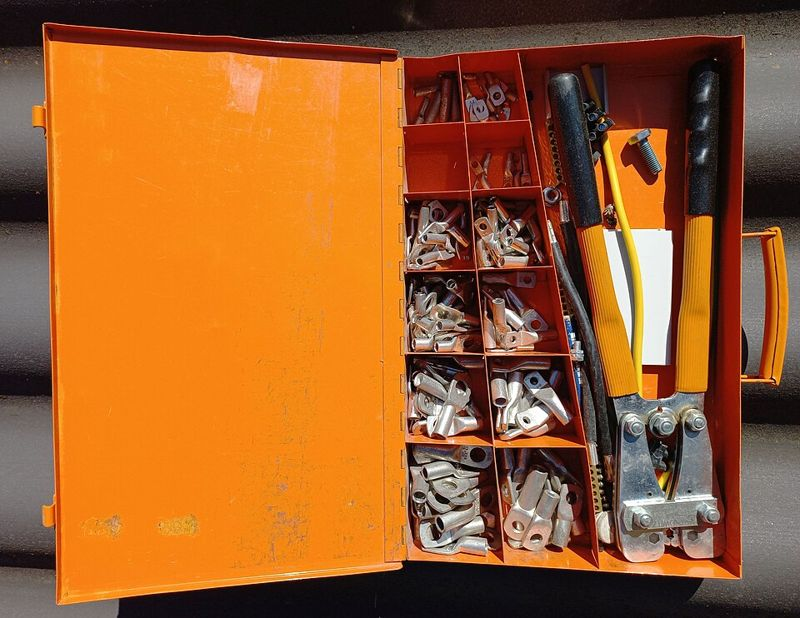
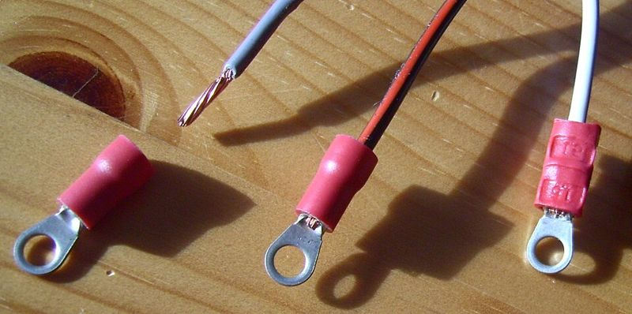
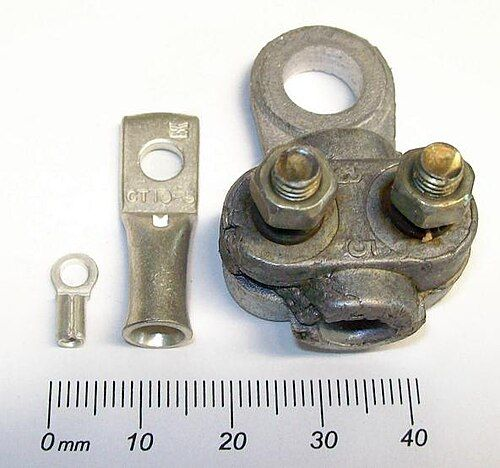
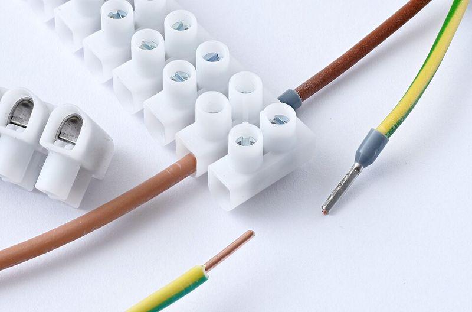
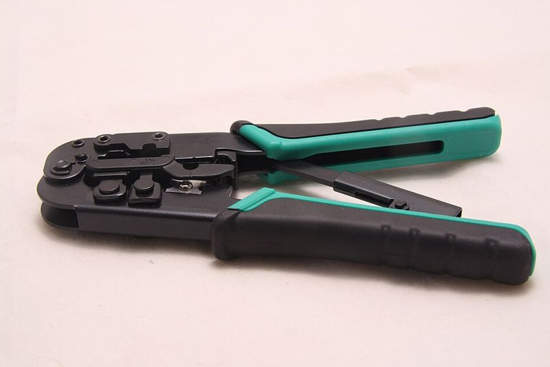
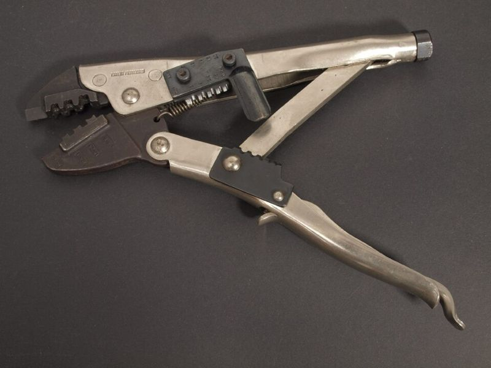
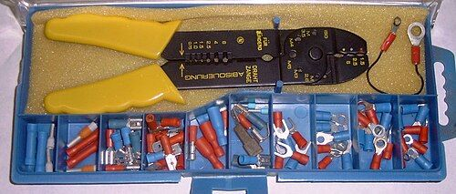
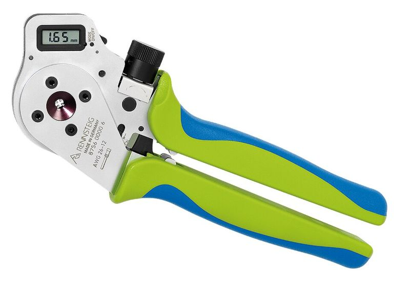
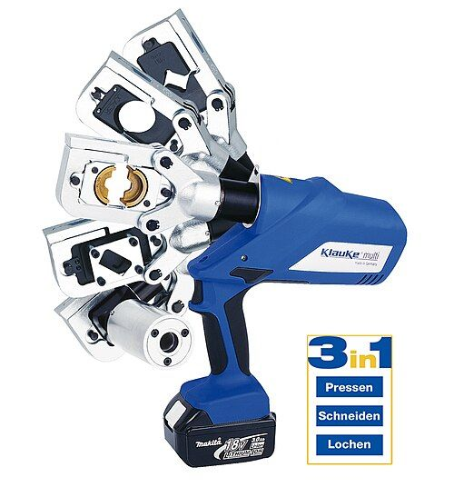
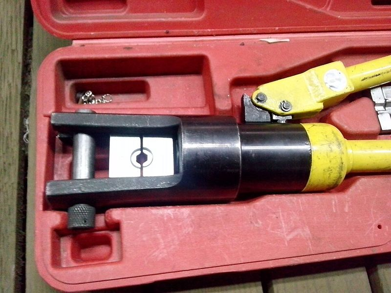
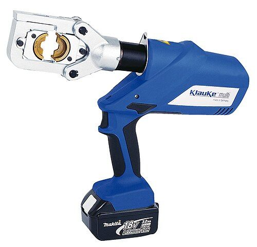
Regula matriței: la papucii tubulari, secțiunea papucului = secțiunea conductorului = codul matriței. Un papuc de 70 mm² sertizat cu matrița de 50 strivește firele (secțiune redusă, fire rupte); sertizat cu matrița de 95 rămâne slab (rezistență de contact mare, încălzire). Amprenta codului pe papuc este dovada pentru recepție.
Cositorirea capătului unui conductor flexibil ca înlocuitor al tubului terminal este interzisă în cleme cu șurub (DIN VDE 0100-520, instrucțiunile producătorilor de aparate) și este o greșeală frecventă la cei veniți din electronică. Motivul este fizic: cositorul curge la rece (fluaj). Sub presiunea șurubului, în câteva luni capătul cositorit se subțiază, șurubul rămâne slab, rezistența de contact crește și borna se încălzește. Cu cât curentul e mai mare, cu atât mai repede. Sertizarea nu are acest defect: cuprul presat pe cupru își păstrează forma.
Cablurile de rețea (Cat. 5e/6/6A), telefonie și coaxiale au sculele lor, pentru că nu se sertizează cu clește de tuburi și mantaua nu se îndepărtează cu cuțitul (mantaua e subțire, perechile se deteriorează ușor).
| Scula | Denumire germană | La ce |
|---|---|---|
| Dezizolator de manta pentru cablu de date | Datenkabel-Entmantler | tăietură circulară la 0,3–0,5 mm adâncime pe cabluri Ø 4,5–8 mm |
| Sculă de pozat LSA-Plus (cu tăietor) | LSA-Anlegewerkzeug | apasă conductorul în contactul cu tăiere a izolației (Schneidklemme) al prizelor RJ45, patch-panel-urilor și regletelor telefonice; conductorul nu se dezizolează |
| Clește de sertizat RJ45 / RJ11 | Crimpzange für Modularstecker | presează contactele mufei prin izolația conductoarelor și strânge descărcătorul de tracțiune |
| Clește de sertizat coaxial (hexagonal) | Koax-Crimpzange | mufe BNC, F, N sertizabile pe RG-58, RG-59, RG-6; F-compresie are sculă proprie |
| Tester de cablu | Kabeltester | continuitate și ordinea perechilor (T568A/B); testerele de certificare măsoară și atenuarea |
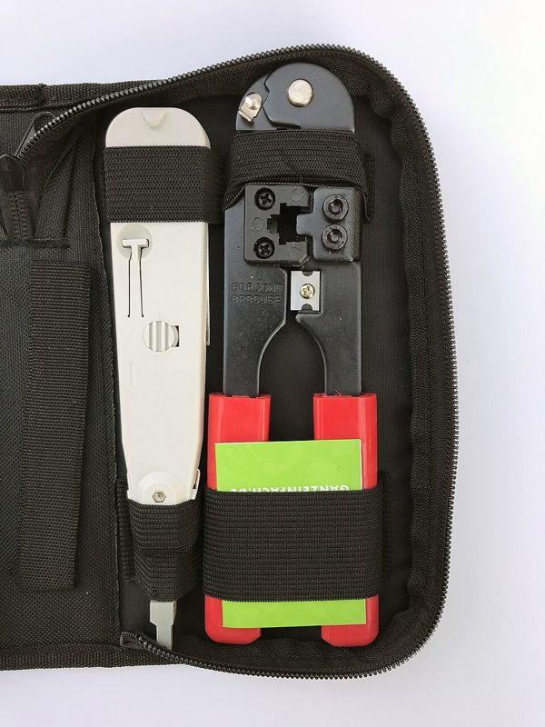
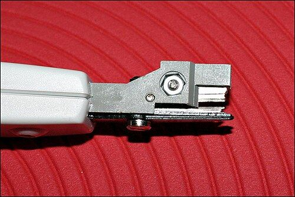
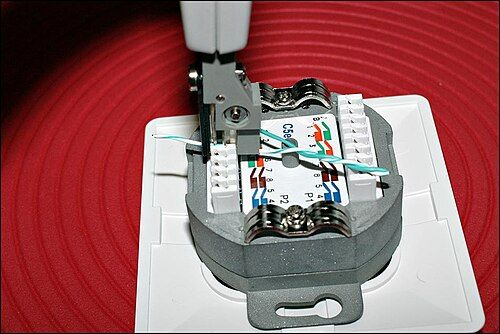
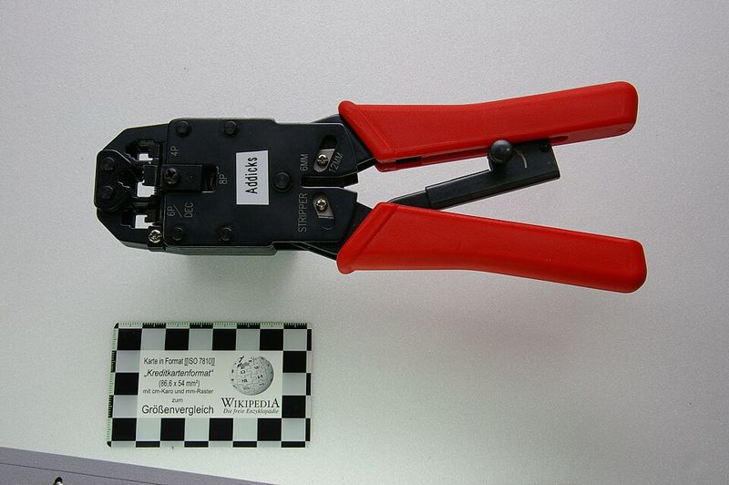
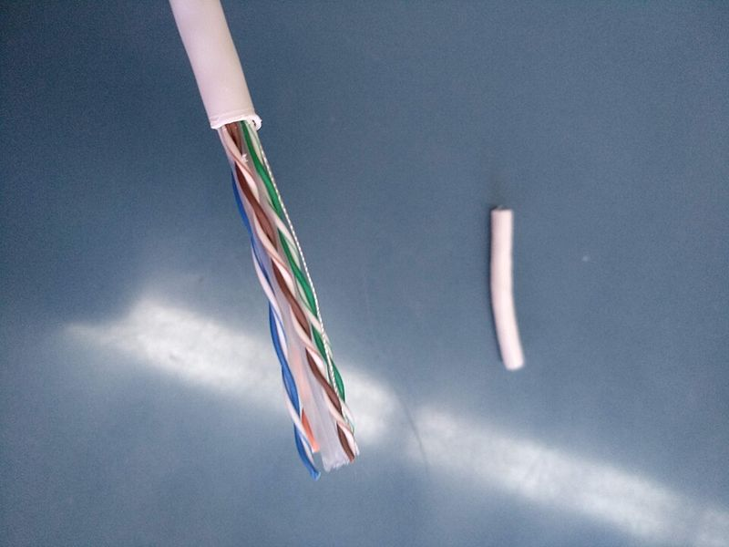
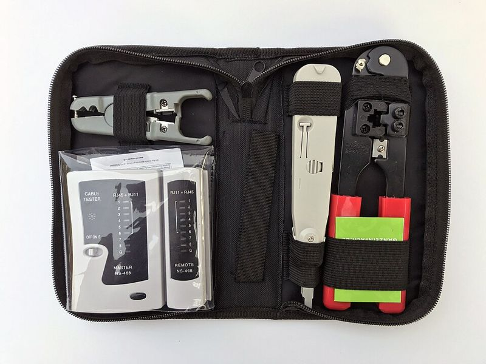
Sculele izolate după SR EN 60900 (IEC 60900), marcate cu simbolul VDE și „1000 V”, au mânerele izolate încercate la 10 kV, iar fiecare sculă e verificată individual în fabrică. Marcajul cuprinde: simbolul dublu-triunghi ⧋ cu „1000 V”, numele producătorului, anul fabricației, norma. Culoarea uzuală în Germania: roșu cu galben (Knipex, Wiha), dar culoarea nu e o cerință a normei.
| Accesoriu / sculă | Denumire germană | Observații |
|---|---|---|
| Tub termocontractibil și suflantă cu aer cald | Schrumpfschlauch, Heißluftgebläse | raport de contracție 2:1 sau 3:1; cu adeziv interior pentru etanșare; se alege diametrul înainte de contracție ≥ Ø piesei și după contracție ≤ Ø conductorului |
| Coliere de cablu și clește de strâns coliere | Kabelbinder, Kabelbinderzange | cleștele strânge la forță reglată și taie la ras, fără margine ascuțită; în exterior numai coliere rezistente la UV (negre) |
| Cleme de legătură (cu șurub, cu arc, cu pârghie) | Lüsterklemme, Verbindungsklemme, Hebelklemme | clema cu șurub cere tub terminal la flexibil; clema cu pârghie (Wago 221) admite masiv și flexibil dezizolat la 11 mm, fără tub |
| Șurubelniță dinamometrică | Drehmomentschraubendreher | bornele au cuplu prescris (ex. 2,5 N·m la 25 mm², 0,5 N·m la cleme de 2,5 mm²); obligatorie la tablouri conform SR EN 61439 |
| Bandă de tras cablu, arc de tras | Kabeleinziehband, Einziehfeder | tragerea conductoarelor prin tuburi; capătul se leagă în „ochi” și se izolează cu bandă ca să nu agațe |
| Trusă electrician | Elektriker-Werkzeugsatz | minim: tăietor lateral VDE, combinat VDE, dezizolator, dezizolator de manta, clește tuburi cu clichet, cuțit de cablu, set șurubelnițe VDE, creion de tensiune, tester bipolar |
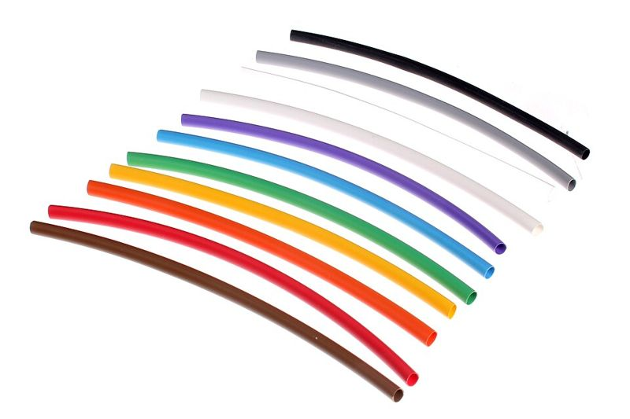
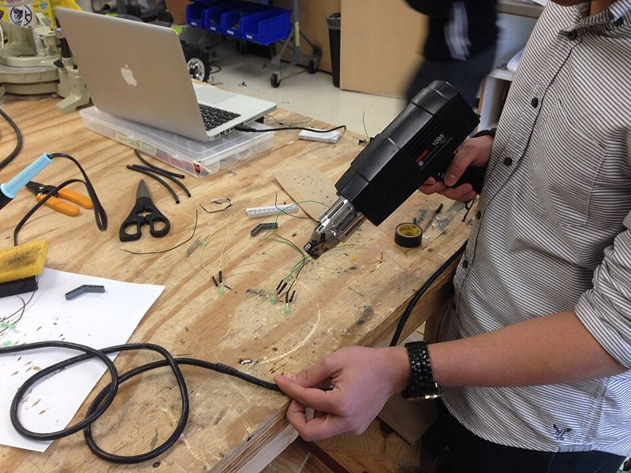
| Greșeala | Ce se întâmplă | Cum se verifică / se evită |
|---|---|---|
| Dezizolare cu cuțitul sau cu tăietorul lateral | fir masiv crestat → se rupe la îndoire; fire tăiate din flexibil → secțiune redusă, încălzire | control vizual la lumină: firul nu are urmă circulară; numărul de fire e complet; se folosește dezizolator |
| Flexibil în clemă cu șurub fără tub terminal | fire strivite, fire răzlețe spre borna vecină, contact slab | tub terminal la orice conductor clasa 5/6 în clemă cu șurub |
| Tub prea mare pentru conductor | presarea nu umple tubul; conductorul iese la tracțiune | proba de tracțiune (mâna, 20–50 N); culoarea gulerului = secțiunea |
| Tub prea mic | firele nu intră toate; unele rămân afară | toate firele intră în tub; niciun fir peste guler |
| Sertizare incompletă (clește fără clichet, strâns slab) | rezistență de contact mare → încălzire lentă, borna se înnegrește | numai clești cu clichet la lucrări de tablou; tubul nu se rotește pe conductor |
| Papuc sertizat cu clește combinat sau cu ciocanul | amprentă neuniformă, fisuri; contact care se degradează în timp | clește sau presă cu matriță de aceeași secțiune; amprenta codului pe papuc |
| Capăt cositorit în clemă cu șurub | fluajul cositorului → șurub slăbit în câteva luni | interzis; se înlocuiește cu tub terminal |
| Cupru dezgolit în afara clemei (dezizolare prea lungă) | risc de atingere și scurtcircuit între borne vecine | lungimea de pe clemă; max. 1 mm de cupru vizibil |
| Cuplu de strângere incorect | prea slab: încălzire; prea tare: filet rupt, conductor strivit | șurubelniță dinamometrică la cuplul din fișa tehnică |
Se conectează 40 de conductoare H07V-K 2,5 mm² (clasa 5) la un șir de cleme cu șurub și la întreruptoare automate. Ce alegem?
Motor 4 kW, 400 V, cos φ = 0,82, randament η = 0,86, alimentat prin cordon H07RN-F. Curentul nominal:
Cordon: H07RN-F 4G1,5 (1,5 mm² admite ≈ 16–18 A în cordon). Conductoarele sunt clasa 5 → la bornele cu șurub ale cutiei de borne: tuburi terminale 1,5 mm² (negre), 8 mm, sau papuci inelari izolați albaștri (1,5–2,5 mm²) dacă bornele motorului sunt cu prezon M4/M5. Conductorul PE (verde-galben) primește papuc inelar sub șurubul de pământ.
Racordul unui tablou general la un cablu NYY-J 4×70 mm² (clasa 2, multifilar), borne M10.
O bornă corect sertizată la 2,5 mm² are rezistența de contact de ordinul 0,2 mΩ. Una slab sertizată poate ajunge la 5 mΩ. La un circuit de 20 A:
2 W într-o bornă de plastic închisă înseamnă zeci de grade în plus; plasticul se înmoaie, șurubul se slăbește și mai mult, rezistența crește și procesul se accelerează. Așa apar bornele înnegrite din tablouri.
Conductor H07V-K 1,5 mm² = 30 fire × Ø 0,25 mm (secțiunea unui fir = π·0,125² = 0,049 mm²). Dacă dezizolarea cu cuțitul taie 6 fire:
Capătul se comportă ca un conductor de 1,0 mm² pe o porțiune scurtă: local se încălzește mai mult, iar la vibrații firele rămase se rup unul câte unul.
Materiale: 1 m NYM-J 3×1,5, 1 m H07V-K 2,5 (albastru), 0,5 m H07RN-F 3G1,5, 0,3 m NYY-J 1×16, tuburi terminale 1,5 și 2,5 mm², papuci inelari izolați albaștri, un papuc tubular 16/M6, cleme Wago 221 și cleme cu șurub, cutie de borne de motor. Scule: trusa de la cap. 13 și presa cu matrițe.
Nume: ______________________ Data: __________ Timp de lucru: 25 minute. Fiecare întrebare valorează 1 punct; 1 punct din oficiu.
Răspunsurile testului și baremul se află la profesor și nu sunt publicate pe această pagină.
Fotografiile provin de pe Wikimedia Commons, sub licențe Creative Commons (CC BY / CC BY-SA); autorul și licența exactă se află pe pagina fiecărui fișier (commons.wikimedia.org/wiki/File:<nume>). Desenele (fig. 1–3) sunt originale.